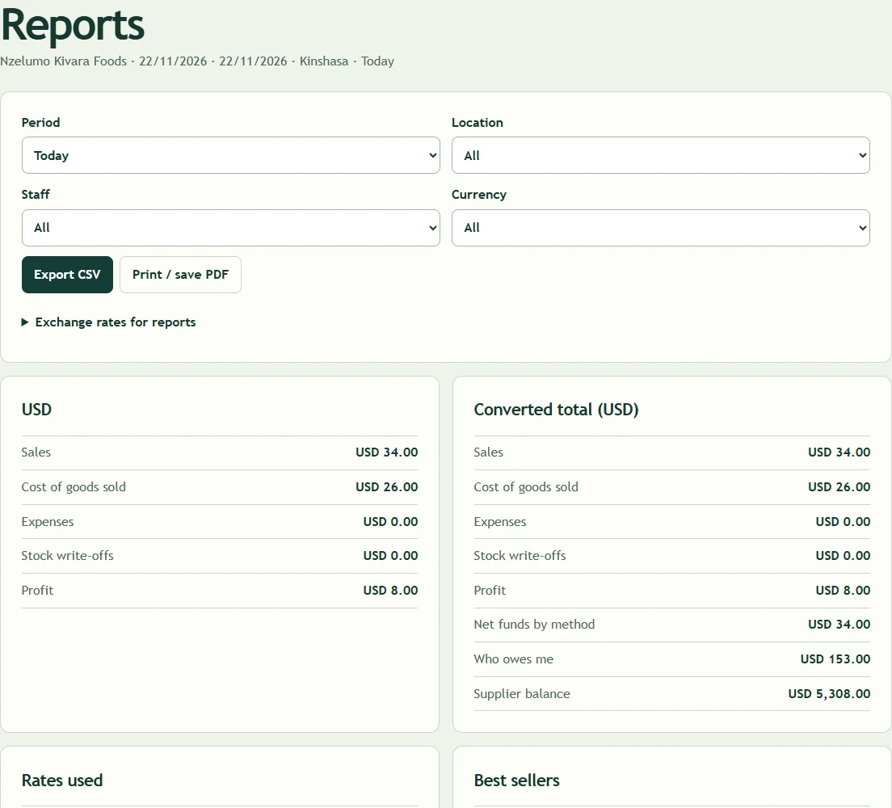

Verified here
The two supplied screenshots exist in the repository and display the interface described above.
The screenshots are genuine existing product screens. All business names and figures shown are fictional sample data.
This page does not expose a live demo or claim production readiness, customers or commercial results.
A reports interface with period, location, staff and currency filters; CSV and print controls; and recorded totals for sales, costs, balances and stock write-offs.


OpenDuka remains a product in development. The next production decisions are outside this milestone.
The two supplied screenshots exist in the repository and display the interface described above.
Hosting, backups, access controls, security, support capacity and readiness for real business data.
A separate business system would be scoped around your records and controls. This is not a promise to deploy OpenDuka.
Review business systems